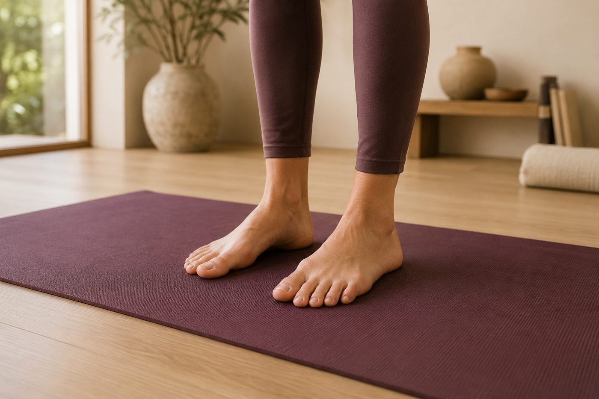

瑜伽站姿怎麼把腳掌踩穩，需要抓緊腳趾嗎？
老師說「腳掌踩穩」，你把腳趾用力摳進墊子，三角式卻還是晃。下一次可以先看看，是腳趾太忙，還是自己把重量一直放在同一邊。
瑜伽站姿說的腳掌踩穩，可以先感受大拇趾根部、小趾根部與腳跟三處地面接觸，再讓腳趾自然放鬆。重心移動時，各點壓力會跟著變，無須強壓成完全平均。可扶牆對照一次抓趾和放鬆時的差別。疼痛或容易失去平衡時，先停下並尋求適合的協助。

三點接觸實際上要感覺什麼？
雙腳自然站在平穩的地面，留意大拇趾根部、小趾根部及腳跟哪一處最有感。小幅移動重心時，壓力可以移動，腳趾也可以自然動。穿鞋時接觸感不同，到鞋子與足弓可比較鞋況與腳底感受。
👆 手機版可左右滑動
| 站姿時的感覺 | 可以試的調整 | 觀察什麼 |
|---|---|---|
| 腳趾一直蜷曲 | 扶牆，讓腳趾自然伸展。 | 少用一點抓地力時是否還能舒服地站。 |
| 重心一直偏在一側 | 把站距改回容易控制的範圍。 | 兩腳與三處接觸點各有什麼感受。 |
| 三處都感覺得到 | 小幅移動重心後回來。 | 接觸點的壓力如何自然轉移。 |
哪些時候可以借牆，哪些時候該把動作做小？
若需要一直抓腳趾維持站穩，可扶牆、縮短站距或先回到自己熟悉的站姿。若走到深蹲才明顯出現腳跟浮起，可以接著看深蹲時的活動幅度與支撐。練習時留意減少抓趾後，閒下來的腳趾能否自然伸展。
常見問題
三點要用同樣的力嗎？
不用。重心與姿勢改變時，三處壓力會不同，能感受到接觸即可。
站姿晃就是足弓塌陷嗎？
單憑站姿晃動無法判定足弓。可先看站距、支撐與抓趾習慣如何影響感受。
記下你最有感的時刻
記下自己在哪一種站姿最容易抓趾，縮小動作或扶牆後感覺有沒有改變。
免費約 2 分鐘，免登入、免加 LINE。做完可用 3 天觀察卡整理日常感受。
開始免費體態訊號掃描 →